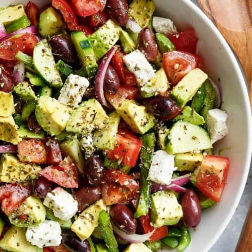

The little lemon is a restaurant based in the heart of chicago and offers a variety of meals base on the traditional recipes.
The Greek salad is this week’s featured meal which has been ordered by many people and received most people overwhelmingly well
